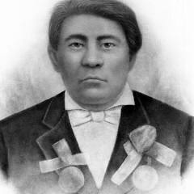
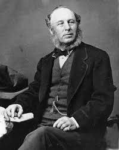
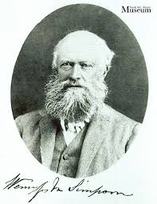

.gif)
Key Figures
Several key figures played a significant role in the negotiation and signing of Treaty 1.
The key figures involved in the negotiation included:
- Ojibwe Chief Peguis
- Chief Henry Prince (Mis-koo-kee-new, Chief Peguis's son)
- Canadian government officials
Chief Peguis

Chief Peguis was a prominent Ojibwe leader who played a crucial role in the negotiation and signing of Treaty 1. He was known for his wisdom and diplomatic skills, which helped facilitate the agreement between the Indigenous peoples and the Canadian government. Chief Peguis worked to protect the rights and interests of the Anishinaabeg of Red River. He stepped in to save lives when fur trade animosities threatened the Selkirk Settlement.
Chief Henry Prince (Mis-koo-kee-new)

Chief Henry Prince (Mis-koo-kee-new) was the son of Chief Peguis and played a significant role in the negotiation and signing of Treaty 1. He was known for his leadership and commitment to protecting the rights and interests of the Anishinaabeg of Red River. Chief Peguis’ most prominent son was Chief Henry Prince (Mis-koo-ke-new or "Red Eagle") (c. 1819–1902), who succeeded him as leader of the St. Peter's Indian Reserve. During the 1869–1870 Red River Rebellion, he resisted pressures from Louis Riel to join forces, maintaining a distinct position for his community. He was baptized as Henry Prince, a surname adopted by several of Peguis' children following their father’s baptism around 1840.
Canadian Government Officials
Major Government Officials involved in the negotiation and signing of Treaty 1 included:

Adams George Archibald: The first Lieutenant-Governor of Manitoba and the Northwest Territories. He acted as the senior representative for the Crown, delivered the main negotiation speeches, and promised many "outside promises" not included in the final written text. He was based in Nova Scotia for most of his career, though he also served as first Lieutenant Governor of Manitoba from 1870 to 1872. Archibald was born in Truro to a prominent family in Nova Scotian politics.

Wemyss M. Simpson: Appointed by the federal government as the Indian Commissioner for the treaty negotiations. He was a former Conservative MP from Ontario and acted as the lead negotiator for the Crown alongside Archibald. Wemyss Mackenzie Simpson was a Canadian politician and businessman who was active in Canada in the mid-to-late 1800s. He is notable for quite a number of accomplishments around the Algoma district, which obviously makes him very relevant to Sault Ste. Marie's history.